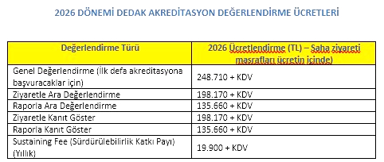

Notes
• A 33% increase has been applied to the fees; this increase is solely based on the annual inflation rate announced by TÜİK and does not include any real raise.
• 50% of the fee is paid after the application is accepted and before the accreditation training; the remaining 50% is paid after the submission of the evaluation report or before the site visit.
• The fees are charged for the accreditation evaluation process. There is no fixed annual accreditation fee.
Annual Accreditation Sustaining Service Fee
• Amount: 8% of the General Evaluation Fee (19,900 TL + VAT for 2026)
• Scope: Applicable to 5-year and +3-year accreditation decisions following the initial accreditation. It does not apply to 2-year accreditations.
• Payment Period: Every March
• Exemption Period: Minimum of 12 months from the date of the accreditation decision (The first payment is made in the March following the 12-month period.)
• Applicability: Effective for programs applying for accreditation (general or interim evaluation) starting from 2026.
Explanation
-
Implementation of annual reporting and monitoring processes
-
Sustaining of active accreditation status
-
Institutional sustainability

Downloads and source images are provided in their original language.